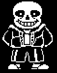

lol dit is dus info over de main characters van undertale. geniet!
Flowey & Asriel
Toriel & Asgore
- Papyrus is the brother of Sans and a major character in Undertale. His main motive is to capture a human so he can become a member of the Royal Guard, and finally have friends and popularity.Papyrus is a tall, perhaps anatomically inaccurate skeleton, with a skull more vertical and geometric than his brother. Being skeletal, many of his expressions incorporate a toothy grin. His eyes resemble vertical slits; his skeletal pseudo-brows form most of his expressions, as well as the corners of his mouth. He has eyeballs which show at times when he is experiencing strong emotions.
Alphys & Mettaton
Dr. Alphys is een vrouwelijk reptielachtig monster dat in het laboratorium in het westen van Hotland leeft. Ze is de zittende Royal Scientist, een functie die ze van Asgore kreeg na de verdwijning van haar voorganger. ----
Mettaton is a robot with a SOUL and was built by Alphys. Initially poised as an entertainment robot turned human killing robot, Mettaton is later revealed to have only acted as such so that Alphys could rescue the protagonist, feel important and become closer to them. Mettaton is the sole television star of the Underground.
Sans

Sans is the brother of Papyrus and a major character in Undertale. He first appears in Snowdin Forest after the protagonist exits the Ruins. He serves as a supporting character in the Neutral and True Pacifist routes, and as the final boss and heroic antagonist in the Genocide Route. Sans appears as a short, paunchy skeleton with a wide toothy grin, glove-like hands and large eye sockets. He wears an unzipped blue hoodie, a white shirt, black shorts with white lining, and a pair of slippers. He has white pupils that disappear when he is serious or angered. When Sans uses telekinesis, his left eye flashes light blue and yellow, the colors for patience and justice, and his right pupil disappears.Sans is laidback and flippant, often sleeping on the job and taking breaks. His laziness is a combination of fatalism and apathy, as he is aware of timeline resets. Conversely, he suggests that this knowledge could be "a poor excuse for being lazy.
 Frisk is the playable character and main protagonist of Undertale. After Frisk falls into the Underground, they embark on a journey to return to the surface. Frisk is the last of the eight humans to fall into the Underground after traveling to Mount Ebott. Frisk is not the "fallen human" whom the player names at the beginning of the game, but Frisk's name is only revealed in the True Pacifist Route.
Frisk is the playable character and main protagonist of Undertale. After Frisk falls into the Underground, they embark on a journey to return to the surface. Frisk is the last of the eight humans to fall into the Underground after traveling to Mount Ebott. Frisk is not the "fallen human" whom the player names at the beginning of the game, but Frisk's name is only revealed in the True Pacifist Route.
 Flowey is a fictional character and the main antagonist of the role-playing video game Undertale, created by Toby Fox. He appears for most of the game in the form of an innocuous sentient flower with a sadistic and psychopathic personality.
his human form is known as
Flowey is a fictional character and the main antagonist of the role-playing video game Undertale, created by Toby Fox. He appears for most of the game in the form of an innocuous sentient flower with a sadistic and psychopathic personality.
his human form is known as  Toriel and Asgore were married and the royals of their kingdom. They had one child called Asriel and an adoptive child called whatever the player chooses as the human's name (Chara). However, when Chara died, Asriel absorbed their soul and took them to the humans' world. They were severely injured by the humans. They could easily have killed all of them, but they didn't fight back. They staggered home and died in front of Asgore and Toriel. Usually kind, patient and peaceful, Asgore was filled with grief which later turned to rage. He wanted to collect seven human SOULs in order to break the barrier and to declare war against humans. Toriel was disgusted by this and left him. After that, Asgore's anger melted and was replaced by sorrow.
Toriel and Asgore were married and the royals of their kingdom. They had one child called Asriel and an adoptive child called whatever the player chooses as the human's name (Chara). However, when Chara died, Asriel absorbed their soul and took them to the humans' world. They were severely injured by the humans. They could easily have killed all of them, but they didn't fight back. They staggered home and died in front of Asgore and Toriel. Usually kind, patient and peaceful, Asgore was filled with grief which later turned to rage. He wanted to collect seven human SOULs in order to break the barrier and to declare war against humans. Toriel was disgusted by this and left him. After that, Asgore's anger melted and was replaced by sorrow.
 Undyne, known as StrongFish91 on the UnderNet, is a fish-like monster that leads the Royal Guard. Clad in her full suit of armor, she pursues the protagonist through the entirety of Waterfall and is frequently evaded or inadvertently thwarted by Monster Kid. Undyne is a piscine, anthropomorphic monster. She has blue scales and a long red ponytail. She has red and blue fins on the sides of her head, and a pair of sharp, yellow, protruding teeth. She wears a red eye shadow and has an eyepatch on her left eye. She also wears a black tank top and jeans, but debuts in armor varying in light and dark shades of gray. Her eyes have black vertical pupils and yellow sclera. Undyne has no nose.
Undyne, known as StrongFish91 on the UnderNet, is a fish-like monster that leads the Royal Guard. Clad in her full suit of armor, she pursues the protagonist through the entirety of Waterfall and is frequently evaded or inadvertently thwarted by Monster Kid. Undyne is a piscine, anthropomorphic monster. She has blue scales and a long red ponytail. She has red and blue fins on the sides of her head, and a pair of sharp, yellow, protruding teeth. She wears a red eye shadow and has an eyepatch on her left eye. She also wears a black tank top and jeans, but debuts in armor varying in light and dark shades of gray. Her eyes have black vertical pupils and yellow sclera. Undyne has no nose.